Wap
e get to our AirBnb in town. “Tshhh tshhh” says our guide, and the camels go down. We knock on the door of the mud-build house on the border of the sandy Sahara desert. A Berber opens and welcomes us in. We tie up a front foot of our camels so they can’t get up and we all go in, leaving the camels in the street by themselves. We drink some peppermint tea with the owner before we say goodbye to our guide. I walk him out and give the camels a scratch on their head. They’ve been interesting companions. Their legs get untight and after the command for getting up, these long-legged giants stand up, and follow the guide away from us, marking the end of some very special days.Experiencing nomad life in the Sahara has always been a dream of mine.
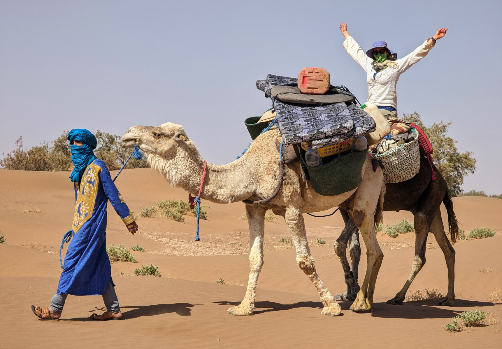
It is the largest hot desert, and the third largest one after the two poles. It covers most of North Africa. It is mainly rocky, but when we think of the Sahara we think of its ergs: sand seas that cover large areas and have sand dunes, some over 180 meter high. Wind or very rare rainfall shape the landscape in these sand seas, so that you get dunes, dune fields, sand seas, dry valleys called wadi’s and many more distinctive features.
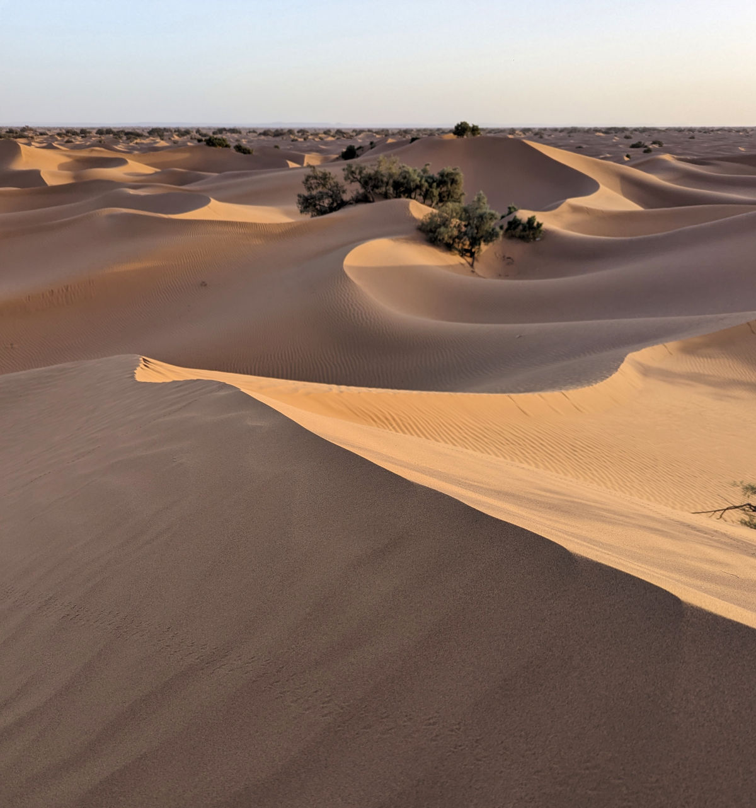
Our adventure started in M’Hamid, a small village next to the last major oases on the way south into the greater Sahara. It is about a 9 hour bus ride from Marrakech, where we flew to. It’s a long but beautiful bus ride, as you go straight over the Atlas mountains, the highest point being something like 2200 meters high. Had it been light when we arrived, we would have seen the land flatten out, Berber tents standing in the landscape amongst some mud huts, fewer green plants and more sand, and people walking around with camels here and there. The road stops in M’Hamid, after it is only sands of Sahara, shepherds and caravan trails. M’Hamid was historically important as the site where trade caravans gathered (some as large as 5,000 camels) before setting off to Timbuktu and other destinations. It was once a thriving village made out of a mix of local Ait Atta Berbers, local Drawa, and local Hassani tribes. The area used to be known for agriculture using water from the Draa river (river defined in the driest way possible) to maintain growing plots. These days, a dam is built higher upstream which dried up the water, and the village is now mainly known for its tourism and music.
The environment is harsh and fragile, and gets crazy hot in summer. We were there in March, while it should have been 20 degrees celsius, a change of circumstances brought temperatures temporarily up to 36 degrees which the locals considered nice and warm, but we would classify as hot! Arguably it would make for a more authentic desert experience.
MHamid is a little town, with lots of permanent desert camps around. The first night we stayed in one of the camps. We were picked up in a jeep by a Berber, looking like most Berbers, wearing a scarf on his head and a long dress. We picked up some water at a store, and needle and thread to repair some clothing that had torn, and were brought to the cutest little mud house, looking out over sand dunes. I could have stayed there much longer.
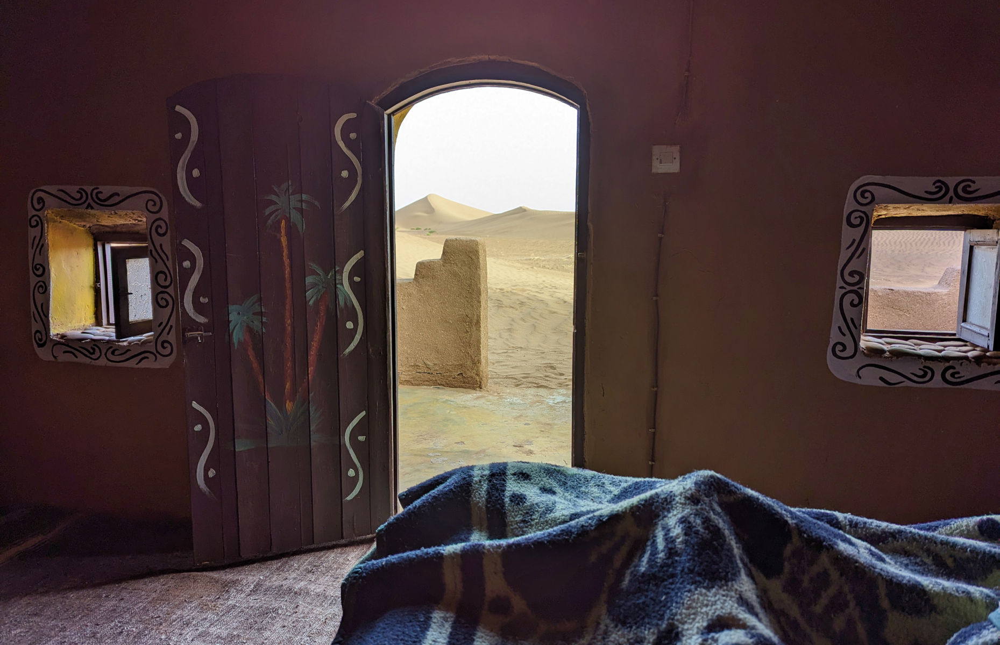
In the morning a delicious breakfast awaited with traditional peppermint tea and local breads. We were going to be picked up by our guide there, and indeed, two Berbers showed up and when I went to get our bags, I could see two packed camels standing a little ways off. Our adventure was about to begin.
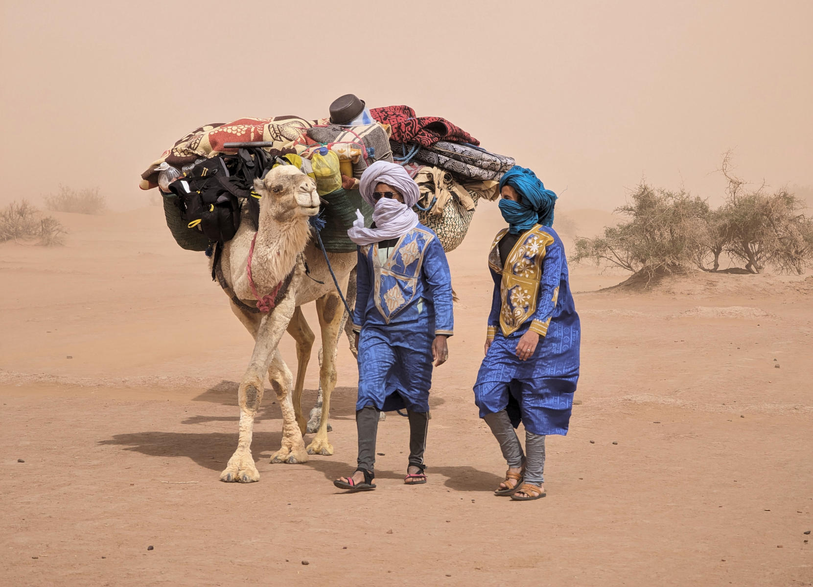
We organized a 3 day desert trip with 2 camels to carry our stuff. To get a taste of how the desert nomads have been trekking since early times. Typically, after waking up and having breakfast, we help to break up the traditional Berber tent in the morning and our more modern and bug-proof Quesha 2-second tent. We load our belongings on our camels.
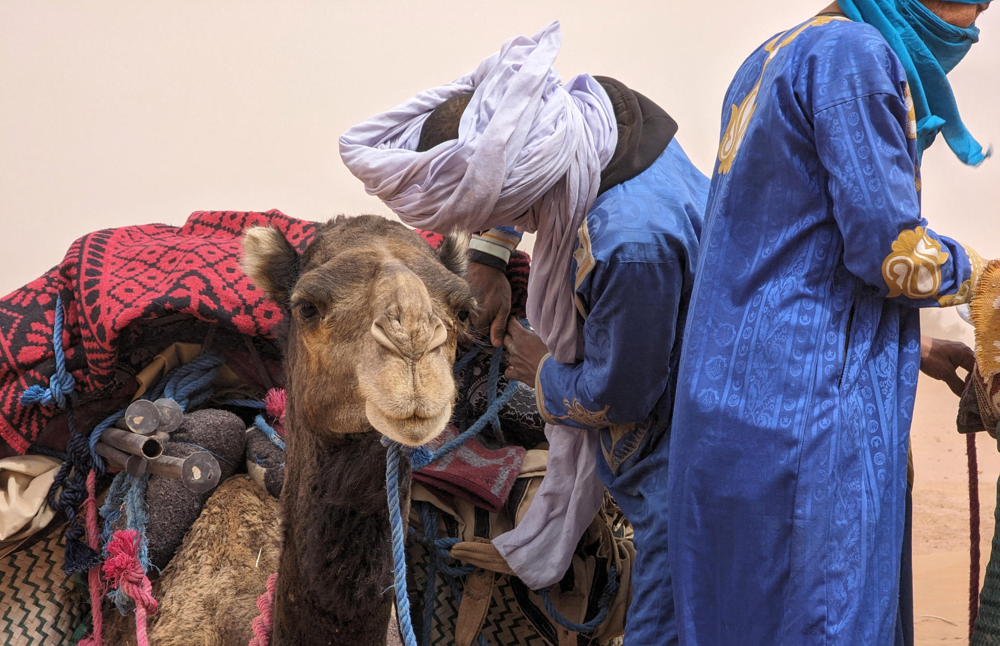
We walk with the camels in tow until noon, eat and rest in the shade of some trees while our camels walk around with front legs tied to each other so that they can move and eat but not get so far away that they are gone.
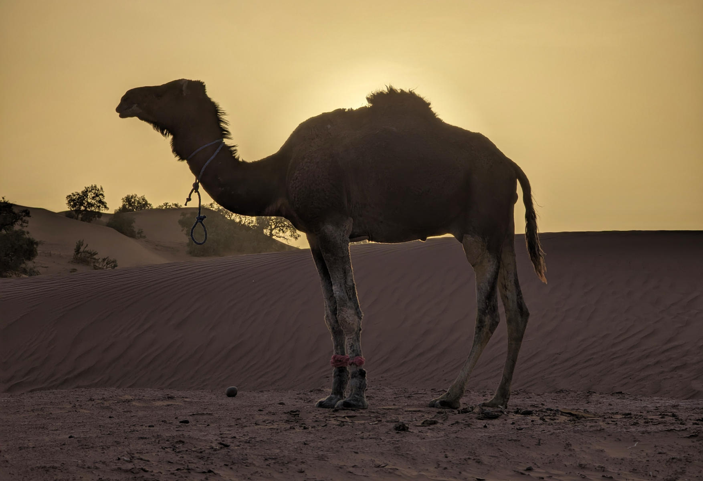
Then we walk until the sun casts long shadows and the colour of the sand dunes becomes even more intense. We snack on almonds and dates, and collect wood from nearby desert trees to start a fire. We watch the sunset from a dune top. We go back to camp and eat tajine which our guide Nouredine and cook Abdul made on the coals of the campfire.
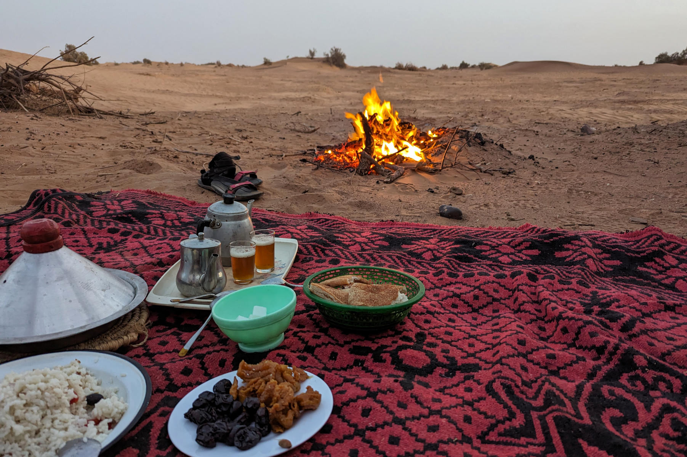
Meanwhile, in the absence of light pollution, the sky starts to show its twinkling stars as brightly as it possibly can. We hang about, while Nouredine and Abdul play some music or just gently chat and rest.
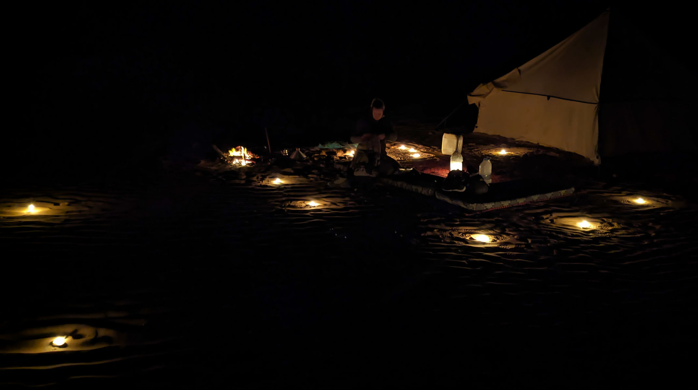
They are a bit more lively now they have had something to drink and eat, trekking is hard for them during Ramadan when they don’t eat or drink between sunrise and sunset. Then, we go to our tent, and sleep the best sleep in a completely silent desert. The wind disappears at night, and there is absolutely no noise whatsoever.
The first day, shortly after we start, the wind starts blowing.
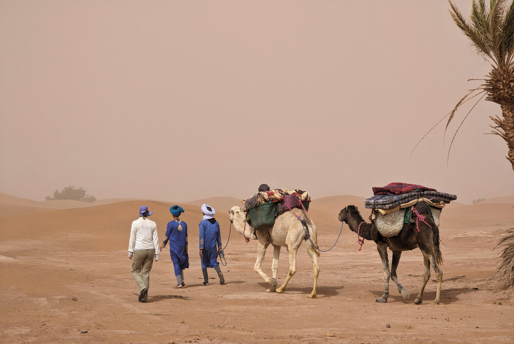
This reduces the visibility to very little and blasts everything with sand.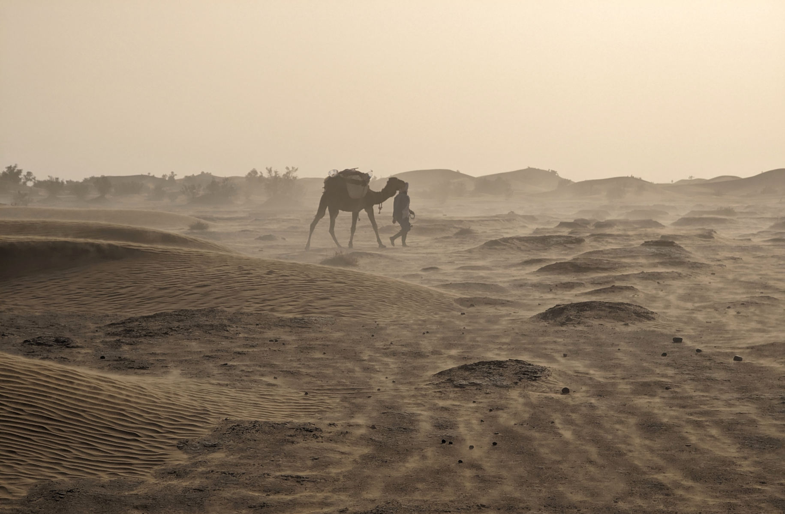
Leigh: A nice relaxing vacation in Morocco is what I've been promised. So then, as I try to peer through the weave of my buff to stumble in the right direction without heaps more sand scratching my eyes, I start to think “how do I find myself in this sandstorm?” I almost always avoid camping on beaches to avoid sand getting everywhere. But my previous definition of everywhere was in the bottom of the tent and in the occasional shoe. Now it was flying all around in a giant sand blaster. Everywhere really meant everywhere now. Even the desert sun was blocked by the sand in the air; a mild bonus for someone who showed up with only dark coloured clothes. I conclude my consent was tricked; initially a tourist ride on a camel was proposed but the magic words were uttered, ‘tourists, lines of them” and I suggested maybe we can get our own camel to walk with. My introversion was manipulated, there were no tourists in sight, just desert and sand.
The next day we’re used to the drill and can help better with camp duties.
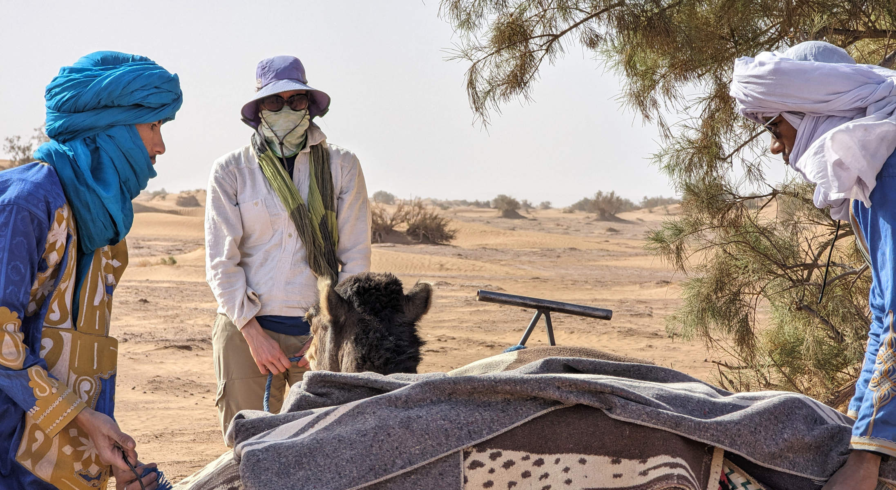
The wind gets up a little, but only enough to provide a breeze that cools us a little. We’ve eaten and drunk some of our rations, so one of the camels has enough space for a person to ride it.
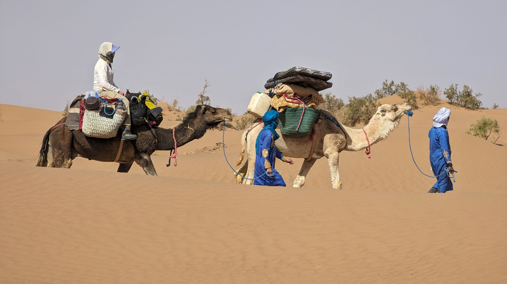
We cross the river Draa basin and see a plant named Calotropis which we haven’t seen before, but are quickly warned that its beauty comes with deadly toxins and we are not to touch it or we can become blind from its white sap.
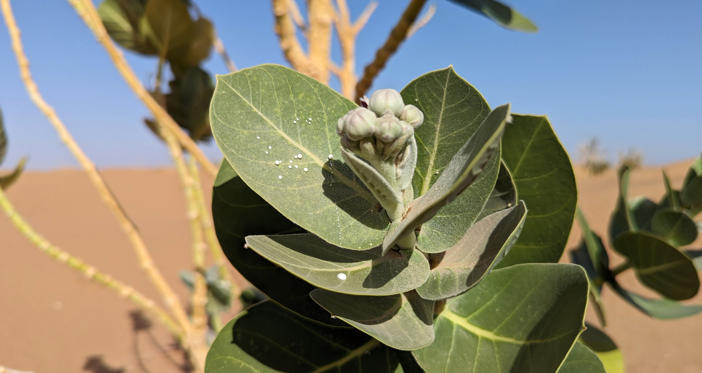
It is a smart defence mechanism of the plant, because our camels take a bite from every other plant they can reach. This one they leave alone. At nightfall there is no sand in the sky, and the sunset and view from Erg Bertram, where we camp, is amazing.
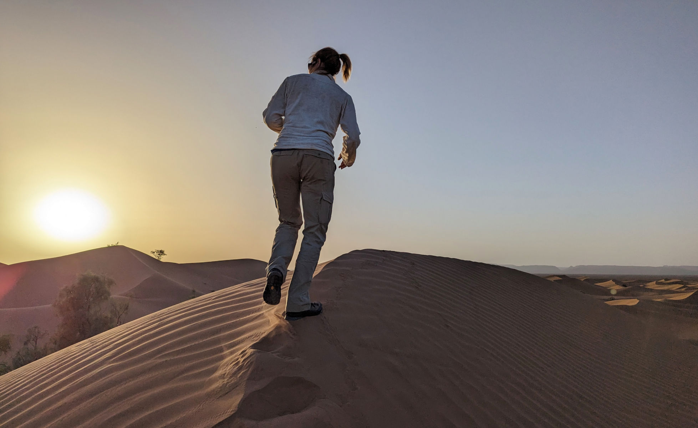
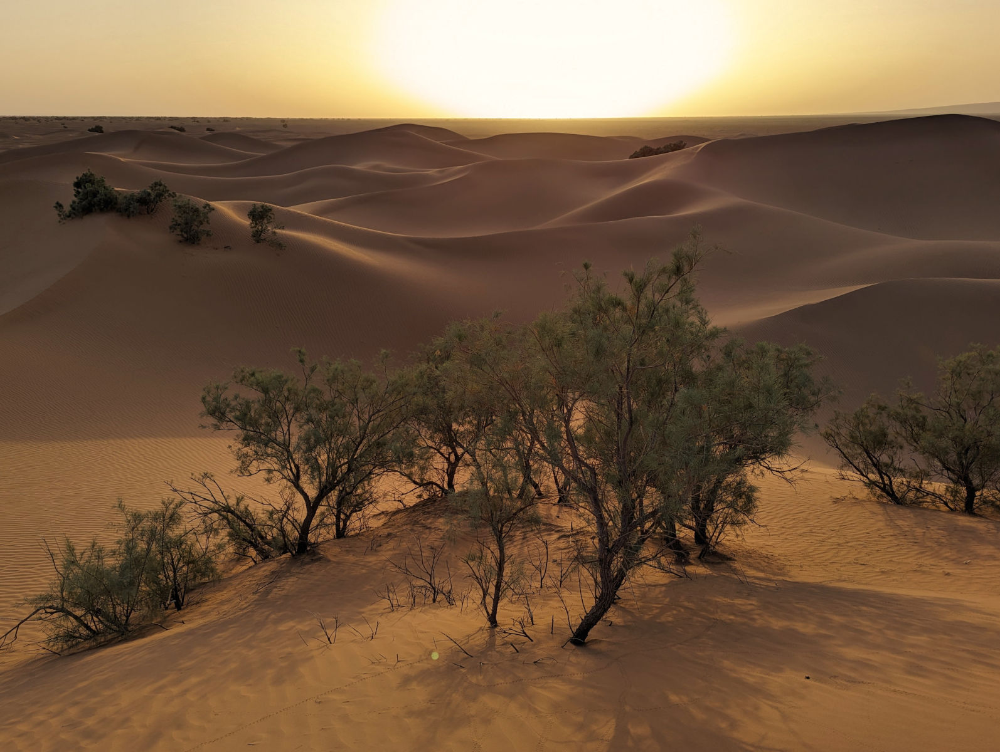
While the scorpions and snakes are rumoured to still be hibernating, some sand bugs come out in the evening, and we’re happy with a bug proof tent so we can sleep without them jumping on us. We make traditional desert bread to eat with our Tajine, which you make by putting dough directly in sand heated up by fire. Amazingly, no sand sticks and it tastes amazing when it comes out.
The last day we walk back to town.
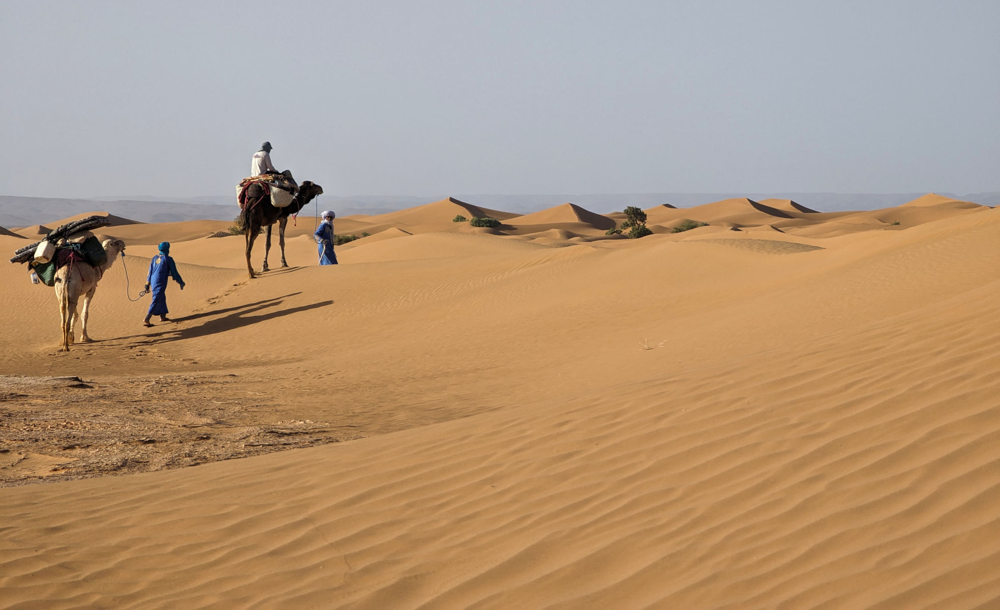
We learn on this day why the guides leave water bottles in certain trees. It can be the difference between life and death for others, and if you have any water left, bringing it back to town makes no sense. Even though it was a relatively short trekking, we are grateful to have experienced this special nomad life with the camels and the break from hectic life.
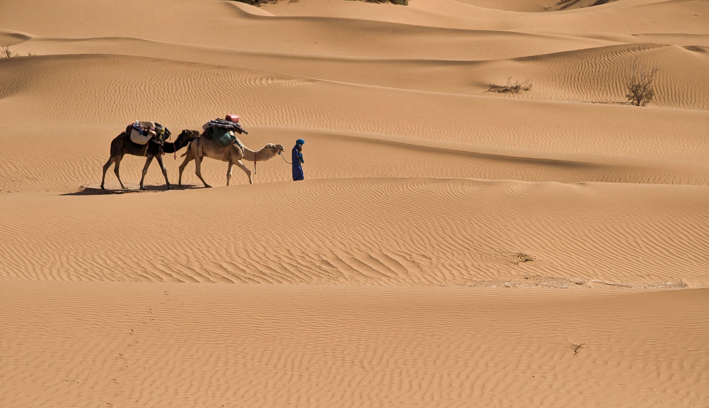
Co